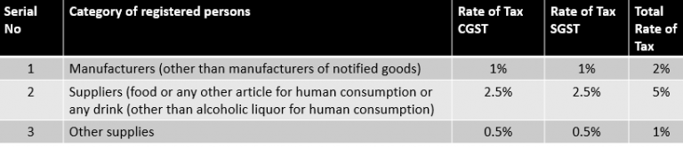

GOODS
AND SERVICE
TAX

FAQ'S ABOUT GST
Mr. Arun Jaitley
- Q1. Who can opt for Composition Scheme?
Ans. Businesses dealing only in goods can only opt for composition scheme. Services providers have been kept outside
the scope of this scheme. However, restaurant sector taxpayers may also opt for the scheme.
This holds true if your annual turnover is below Rs 75 Lakhs.
- Q2. What is the tax rate applicable on a composition dealer?
Ans. A registered taxpayer, who is registered under the Composite Scheme will pay tax at a rate not more than 1% for manufacturer,
2.5% for restaurant sector and 0.5% for other suppliers of turnover.

- Q3. Must a Composition Dealer maintain detailed records?
.Ans. No, a dealer registered under composition scheme is not required to maintain detailed records
as in the case of a normal taxpayer.
- Q4. Do Composition Dealers have the option to avail Input Tax Credit?
Ans. No, a Composition Dealer is not allowed to avail input tax credit of GST paid to their supplier.
- Q5. Can a Composition Dealer issue Tax Invoice?
Ans. No. Since a Composition Dealer is not allowed to avail input tax credit, such a dealer cannot issue
a tax invoice as well. A buyer from composition dealer will not be able to claim input tax on such goods.
- Q6. Which returns are required to be filed by a taxable person registered under Composite Scheme?
Ans. The taxable person is required to furnish only one return i.e. GSTR-4 on a quarterly basis and an
annual return in FORM GSTR-9A.
- Q7. Is liability to pay taxes under Reverse Charge Mechanism covered under the Composite Scheme?
Ans. Any tax payable under Reverse Charge Mechanism will not be covered under the scheme. These taxes
will be liable to be paid as a normal tax payer.
- Q8. Can a Composition Dealer collect composition tax separately?
Ans. No, a Composition Dealer is not allowed to collect composition tax from the buyer.
- Q9. What is the threshold limit to be eligible for Composition Scheme?
Ans. Any dealer whose aggregate turnover in a financial year does not exceed Rs. 75 Lakh can opt for composition scheme
- Q11. Can a dealer involved in interstate supplies opt for Composition Scheme?
Ans. No, Composition Scheme is available only for intra-state supplies. If a dealer is involved in inter-State
supplies, then he cannot opt for the scheme
- Q12. What are the penalties applicable on Composition Dealer in case of any default in tax payment?
Ans.If the tax administration has reason to believe that a composition dealer has wrongly availed
the benefit under the composition scheme, then such a person shall be liable to pay all the taxes which
he would have paid under the normal scheme. Also, he will be liable to pay a penalty equivalent
to an amount of tax payable.This penalty will not be levied without giving a show cause notice to the dealer.
- Q13. What are the transition provisions if a business transits from Composition Scheme under current regime to Regular Taxation under GST?
Ans. Taxpayers registered under composition scheme under the current regime will be allowed to take
credit of input held in stock, or in semi-finished goods or in finished goods on the day immediately preceding
the date from which they opt to be taxed as a regular tax payer.
- Q14. What are the conditions for availing input credit on stock lying at the time of transition?
Ans. Following are the conditions which must be addressed by the taxpayer to avail credit on input at
the time of transition from composition scheme to the normal scheme:
Such inputs or goods are intended to be used for making taxable supplies under GST law.
Taxpayer was eligible for CENVAT Credit on such goods under the previous regime, however, couldn’t claim it being under composition scheme.
Such goods are eligible for input tax credit under GST regime.
The taxpayer has legal evidence of input tax paid on such goods.
Such invoices were issued within a period of 12 months from GST applicable date.
- Q15. What is the treatment for input credit availed when transitioning from normal scheme to Composition Scheme?
Ans. When switching from normal scheme to composition scheme, the taxpayer shall be liable to pay an amount
equal to the credit of input tax in respect of inputs held in stock on the day immediately preceding the date of
such switchover. The balance of input tax credit after payment of such amount, if any lying in the credit ledger shall lapse.